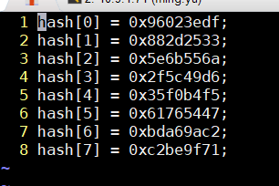
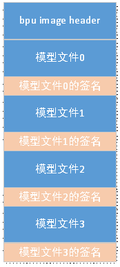

4.6. 安全启动使用说明
4.6.1. 引言
该文档主要是对于XJ3芯片方案中关于安全启动与加密的使用说明。
4.6.2. uboot签名过程
4.6.2.1. header格式布局
bl31和uboot的header格式如下：
typedef struct {
uint8_t signature_h[RSA_SIGN_SIZE];
uint8_t signature_i[RSA_SIGN_SIZE];
uint32_t magic; /* HBOT */
uint32_t image_load_addr;
uint32_t image_len;
uint32_t product_id;
uint32_t customer_id;
uint8_t reserve[HB_HEAD_SIZE - 2 * RSA_SIGN_SIZE - 20];
} hb_img_header;
signature_h: header中除了本部分外，对其他内容的签名
signature_i： 该image的签名
magic： 幻数，HBOT
image_load_addr: image验证过后被load到ddr的地址
image_len: image len
customer_id:customer id，预留给客户使用，要与efuse中烧写的customer id保持一致
product_id:预留给客户自定义的product id，与efuse中烧写的product id要一致
reserve： 保留
在编译镜像时，会将header添加到uboot.img之前，在安全启动时 spl根据header中信息对uboot镜像验证。
4.6.2.2. 加密和签名工具
在build/tools/下，有一个key_management_toolkits，这个文件夹下便是用来对各个image进行打包的工具，其中util_auth.sh是对文件加密和签名的脚本，对其他image的打包会经常用到这个脚本。
while getopts "ei:o:k:v:p:shr" opt; do
case $opt in
r) # get key from kms with real rom key
get_rom_key=1
fallback_key=0
;;
i)
input=$OPTARG
;;
o)
output=$OPTARG
;;
k)
key=$OPTARG
;;
v)
iv=$OPTARG
;;
p)
pad_size=$OPTARG
;;
e)
pad_image $input $pad_size
encrypt_image $key $iv $input.pad
exit
;;
h)
hash_image $output $input
exit
;;
s)
sign_image $key $input $output
exit
;;
\?)
echo "Invalid option: -$OPTARG" >&2
;;
esac
done
r: 表示使用真正的key， 需要从服务器上拿到key（该服务器需要客户自己搭建，当前代码中的示例为地平线内部服务器）
i: 输入
o: 输出
k: key
v: init vector
p: padding size
e: 执行加密过程
h：执行hash过程
s: 执行签名过程
util_auth.sh 代码中关键function介绍：
encrypt_image: 对image进行加密
hash image：对image进行hash计算
sign_image: 对image进行签名,本地测试的key存放在了tools/key_management_toolkits/allback_key_sets路径下。用户在使用自己的key时，对应替换掉这个文件夹下对应的key
打包uboot的工具为pack_uboot_tool.sh，位于build目录下，打包的过程如下：
function pack_uboot()
{
local uboot_sign_image="uboot.img.bin"
# get uboot keys
get_key
# sign uboot Image
cp "${UBOOT_SRC_DIR}/${uboot_image}" ./
enc_and_sign_uboot
rm ${uboot_image}
# sign Header
sign_header
# cat image / header together
cat uboot_header_with_sign >> $uboot_sign_image
if [ x"$ENCRYPT_FLAG" = x"true" ];then
cat ${uboot_image}.pad.enc >> $uboot_sign_image
else
cat ${uboot_image}.pad >> $uboot_sign_image
fi
# move all key to $key_set_loc
mv $uboot_rsa_pub $uboot_rsa_priv $key_set_loc
mv $uboot_aes_key $uboot_aes_iv $key_set_loc
# move debug image to $debug_loc
mv ${uboot_image}* $debug_loc
mv uboot_header_tmp uboot_header_tmp.pad $debug_loc
mv uboot_image_load_addr.bin uboot_image_size.bin $debug_loc
mv uboot_header_tmp* uboot_header_with_sign $debug_loc
# mv uboot_magic.bin $output_loc
}
get_key 获取uboot的key
enc_and_sign_uboot 对uboot image进行签名
sign_header 对uboot的header进行签名
打包uboot header和uboot image
4.6.2.3. uboot image签名
enc_and_sign_uboot 函数对uboot.bin镜像签名，uboot签名的过程比较简单（加密作为备选，并未用到）
对uboot image计算hash
对hash进行签名，目前uboot签名使用本地的key，客户在使用时将$uboot_rsa_iv对应的私钥文件替换即可，公钥用于在spl阶段对uboot镜像验证。
4.6.2.4. uboot header签名
sign_header 对uboot header签名。
首先按照header的布局，填充header内容
对header计算hash，并签名，header和image的签名使用同一把key
最终将header的签名填充到header中，USER_PRODUCT_ID/USER_CUSTOMER_ID即header格式中product_id/customer_id,客户可自行进行修改，但要与烧到efuse中product_id/customer_id一致（efuse相关内容见本文后续章节），然后生成最终的header
4.6.2.5. 密钥管理
签名校验算法使用的是RSA2048，私钥使用标准的PEM PKCS#1格式，客户将公钥和私钥覆盖build/tools/key_management_toolkits/fallback_key_sets下的spl_rsa_uboot_img_priv.pem和spl_rsa_uboot_img_pub.pem文件，在编译时，便会对uboot进行签名。通过openssl生成公钥和私钥方法如下：
cd build/tools/key_management_toolkits/fallback_key_sets
openssl genrsa -out spl_rsa_uboot_img_priv.pem 2048 # 生成私钥
openssl rsa -in spl_rsa_uboot_img_priv.pem -pubout -out spl_rsa_uboot_img_pub.pem # 根据私钥生成公钥
spl需要使用公钥进行验证，spl有两种方式获取公钥。
第一种方式，需要客户将公钥交于地平线，地平线将公钥打包到spl的keybank中，地平线将会对keybank镜像加密和签名，以确保keybank的安全性。
第二种方式，客户可将公钥打包到image中，并需要将其hash烧写到efuse中，spl将会计算镜像中的hash，与efuse中烧写的hash进行比对。
默认情况下编译时，已经将公钥打包到了镜像中，客户只需要将uboot的公钥替换为自己的即可。在build/tools/key_management_toolkits下，pack_keyset_tool.sh脚本用于打包公钥并计算hash值，执行该脚本后，将在ddr的输出目录产生efuse_hash_data文件，文件中存放了公钥的hash。需要将hash烧写到efuse中。

注：
烧写efuse的方法参见章节“EFUSE的烧写”
公钥的hash并不是对xxxx-pub.pem文件直接计算hash，而是对公钥256字节的元数据计算hash，请使用pack_keyset_tool.sh生成hash
4.6.3. BPU模型文件的保护
BPU模型文件的保护可以分为两个部分：
一是防止模型文件被离线修改，也就是对模型文件的源文件进行保护。在PC上进行加密和签名，在SPL中可以进行签名验证和解密，对BPU模型源文件实现保护。
二是防止模型文件被在线修改，也就是在运行过程中，模型文件区域被踩踏或恶意修改。通过MPU硬件对模型区域进行保护，只允许BPU可以访问模型区域
4.6.3.1. bpu image的布局
模型文件在PC端是先进行加密，然后再签名，在SPL中则是先验证签名再解密。
bpu image的header格式如下
typedef struct {
hbm_info_t hbm[4];
uint32_t image_len;
uint32_t bpu_range_start;
uint32_t bpu_range_sz;
uint32_t bpu_all_fetch_only_sz;
} bpu_img_header;
hbm: 模型文件信息，最多可以放4个模型文件
image_len:image的长度
bpu_range_start: bpu模型地址的起始
bpu_range_sz：所有bpu模型的大小
bpu_all_fetch_only_sz: 所有bpu模型中指令数据的大小
每个模型文件header的格式如下
typedef struct hbm_info { char name[100]; uint32_t hbm_size; uint32_t inst_load_addr; uint32_t inst_load_size; uint32_t par_load_addr; uint32_t par_load_size; uint32_t inst_data_offset; uint32_t par_data_offset; uint32_t signature_offset; uint32_t hbm_start_offset; uint32_t sig_flag; } hbm_info_t;
name: 模型的名称
hbm_size: 模型文件的大小
inst_load_addr: 指令数据load到内存的地址
inst_load_size: 指令数据大小
par_load_addr: 参数数据load到内存的地址
part_load_size: 参数数据大小
inst_data_offset: 指令数据的偏移
par_data_offset: 参数数据的偏移
hbm_start_offset: 模型文件的偏移
sig_flag: 签名flag，0表示地平线签名，1表示客户签名
bpu image的布局如图所示：

4.6.3.2. bpu image的签名
加密过程由编译器同时提供的HBDK完成，加密完成后，将生成一份加密后的模型文件和一份模型文件信息的json文件。
json文件的形式如下：
{
"inst": {
"bpu_inst_offset": "0x10000", //指令数据的偏移
"bpu_inst_size": 65536 //指令数据的大小
},
"param": {
"bpu_param_offset": "0x20000", //参数数据的偏移
"bpu_param_size": 65536 //参数数据的大小
},
"summary": {
"aes_iv_crc32": "0xf97160f3",
"aes_key_crc32": "0xcc58ebb9",
"cipher": "aes-128-cbc",
"file_name": "test3_enc.hbm", //模型文件的名称
"file_size": 262144, //模型文件的大小
"inst_ciphertxt_crc32": "0x789593ac",
"param_ciphertxt_crc32": "0x231c332e"
}
}
签名由客户完成，使用摘要算法是sha256，签名算法是RSA2048，产生256字节的签名信息附在原模型文件的后面即可。
在keymangement_tools中提供了一个可参考的签名脚本bpu_only_sig.sh，支持多对个HBM文件进行签名
./bpu_only_sig.sh –b –i utils/fallback_key_sets –j test3_enc.hbm.json,test4_enc_hbm.json
-b -i表示是使用了本地的key
-j 表示模型信息json文件，可添加多个模型文件，以逗号间隔
执行后，源文件不变，会生成xxxx-with-sign文件，表示添加了签名信息的模型文件
./bpu_only_sig.sh中使用的地平线的公钥私钥信息，若客户使用自己的私钥签名，需将RSA公钥交于地平线打包进SPL中。
下面是bpu_only_sig.sh中对bpu image签名的函数，同uboot/bl31的签名过程类似，使用util_auth.sh脚本对image计算hash，然后进行签名，这里也使用的本地的key
pack_mul_hbm()
{
name=$(cat $1 | ${JQ_EXEC} .summary.file_name | sed 's/\"//g')
if [ $name != "null" ]&& [ $name != "" ]; then
#encrypt bpu image, shall be delete in future #1
pad_image $name 64
util_auth.sh -i $name.pad -o $name.tmp -h
# sign bpu image hash
util_auth.sh -i $name.tmp_hash.bin -k spl_rsa_bpu_img_priv.pem -o $name.tmp.sign -s
rm $name.tmp_*
cat $name.pad > $name-with_sign
cat $name.tmp.sign >> $name-with_sign
fi
}
4.6.3.3. bpu image的打包
模型文件签名之后，需要对模型文件增加头信息，有两种方法：
PC端在keymangement_tools中提供了打包bpu image的工具pack_bpu_img.py。
注意：此时要打包的文件是附带了签名的HBM文件。例如使用bpu_only_sig.sh生成了带签名的HBM文件xxx-with-sign文件，应将此文件覆盖原来的HBM文件。
python3 pack_bpu_img.py -j test3_enc.hbm.json,test4_enc.hbm.json -s 0,1 -a 0x2c940000
-j 模型信息json文件，可同时打包多个模型文件，json文件以逗号间隔，最多可打包4份模型文件
-s 签名标志位，0—表示由地平线签名，1—表示外部客户签名。有多份HBM文件时以逗号间隔，并与json文件一一对应。外部客户对模型文件签名后，需将公钥交于地平线，打包入SPL中。
-a 模型文件load地址
由于模型文件被load到指定地址后，MPU会将这块区域进行保护，只有BPU可以访问这块区域，所以这块区域需要提前预留。
默认DTS中为ion预留了一块区域，使用的是CMA。起始地址为0x4000000，大小为0x2A000000，为了节省DDR，并未专门给BPU模型预留区域，因此这块区域可能被多个驱动模块使用。
ion_reserved: ion_reserved@0x4000000 {
compatible = "ion-pool";
reg = <0x0 0x4000000 0x0 0x2A000000>;
status = "disabled";
};
BPU尝试预留内存时，由于CMA的对齐为4M，这可能出现DDR资源的浪费。因此需要使用ion_reserved区域。ion_reserved默认处于未被使能的状态，我们首先把CMA区域替换成ion_reserved，然后再借用ion_reserved的部分区域作为BPU预留区域。
通过UBoot命令行的方式从ion中末尾处截取一段区域作为BPU模型的区域：
UBoot命令设置BPU模型区域，10表示设置模型区域大小为10M，最大为64M
setenv ion_cma 0
setenv model_reserved_size 10
saveenv
在执行完上述UBoot命令后，模型区域的起始地址是0x4000000 + 0x2A000000 - 0xA00000 = 0x2D600000，大小为0xA00000
在板子上，提供了hrut_hbm工具也可以进行添加hbm文件的动作
hrut_hbm -j test3_enc.hbm.json -s 0 -a 0x2c940000
-j: 模型文件的json文件
-s: 签名的标志
-a: load bpu模型的地址，如果emmc或flash已经有了bpu模型，该参数可以不指定
4.6.3.4. 运行时的保护
模型包括指令和参数两部分，两部分数据被load到内存保留的地址后，MPU会将这两部分数据设置为BPU只读，其他模块不可读不可写。所以在UBoot中要设置DTS为BPU模型预留一块区域，以免出现MPU设置为BPU只读的区域被其他模块申请的情况。
4.6.4. EFUSE的烧写
4.6.4.1. efuse的基本介绍
eFUSE中共有31bank，每个bank有32bits，bank31的每个bit对应某个bank的lock标志，置1表示此bank将不能被烧写。bank7-bank11的全部32bit，以及bank21[0:23]和bank22[0:5]可供用户烧写。Bank21可供用户烧写customer id和product id。bank21的结构如下
| 比特位 | [0:15] | [16:23] |
|---|---|---|
| 含义 | CUSTOMER ID | PRODUCT ID |
Bank22的结构如下
| 比特位 | [0] | [1] | [2] | [3] | [4] | [5] |
|---|---|---|---|---|---|---|
| 含义 | disable jtag | disable bif sd | disable bif spi | verify uboot | verify bpu model | select key |
4.6.4.2. efuse的配置文件
在miniboot/ddr/efuse下提供了efuse_cfg_outside.json文件，可供用户修改efuse的值
{
"outside": {
"bypass":1,
"setlock":0,
"disjtag":0,
"disbifsd":0,
"disbifspi":0,
"veri_uboot":0,
"veri_bpu":0,
"sel_key":0,
"debug_lock":0,
"customerid":"0x0",
"productid":"0x0",
"id_lock":0,
"normalbank": {
"bank7":["0x0"],
"bank8":["0x0"],
"bank9":["0x0"],
"bank10":["0x0"],
"bank11":["0x0"]
},
"securebank": {
"hash0":["0x0"],
"hash1":["0x0"],
"hash2":["0x0"],
"hash3":["0x0"],
"hash4":["0x0"],
"hash5":["0x0"],
"hash6":["0x0"],
"hash7":["0x0"]
},
"socid":["0x0","0x0", "0x0", "0x0", "0x0","0x0", "0x0", "0x0", "0x0", "0x0",
"0x0","0x0", "0x0", "0x0", "0x0","0x0", "0x0", "0x0", "0x0", "0x0",
"0x0","0x0", "0x0", "0x0", "0x0","0x0", "0x0", "0x0", "0x0", "0x0",
"0x0","0x0", "0x0", "0x0", "0x0","0x0", "0x0", "0x0", "0x0", "0x0",
"0x0","0x0", "0x0", "0x0", "0x0","0x0", "0x0", "0x0", "0x0", "0x0",
"0x0","0x0", "0x0", "0x0", "0x0","0x0", "0x0", "0x0", "0x0", "0x0",
"0x0","0x0", "0x0", "0x0", "0x0","0x0", "0x0", "0x0", "0x0", "0x0",
"0x0","0x0", "0x0", "0x0", "0x0","0x0", "0x0", "0x0", "0x0", "0x0",
"0x0","0x0", "0x0", "0x0", "0x0","0x0", "0x0", "0x0", "0x0", "0x0",
"0x0","0x0", "0x0", "0x0", "0x0","0x0", "0x0", "0x0", "0x0", "0x0"]
}
}
bypass: 1表示eFUSE烧写不执行，0表示执行此次eFUSE烧写，若要烧写eFUSE，应置为0。
setlock：1表示写数据后上锁，0表示不上锁
disjtag: disable jtag， 1表示disable。0表示enable
disbifsd: disable bif sd， 1表示disable。0表示enalbe
disbifspi: disable bifspi，1表示disable。0表示enable
veri_uboot: 设置为1表示上电时校验uboot，设置为0，表示上电不校验uboot
veri_bpu: 如果bpu模型放到了镜像中，设置为1表示上电时校验bpu模型，设置为0，表示不校验bpu模型
sel_key: key选择标志位，0表示使用外部key，1表示使用keybank中的key
debug_lock: 1表示更新bank22后上锁，0表示不上锁
customerid: 供用户烧写customer id，最大65535
productid：供用户烧写productid，最大255
id_lock:写入customer id/productid后是否上锁，上锁后customer id和product id不能再写入
normalbank: bank7-bank11的值
securebank: uboot public key的hash值
socid：soc id白名单，每一颗soc都有个unique id，若id在这个白名单中，bif/bifspi/jtag则会打开。
注：
jtag/bif sd/bif spi在spl中默认会打开，soc id白名单优先级最高，在白名单中则会打开，若不在，根据efuse bank22判断，若被置1，则关闭相应功能。
bif sd和bif spi不能单独关闭，可以单独打开，jtag功能不能单独打开，可以单独关闭。即若打开jtag功能，三个功能就都使能。若关闭jtag功能，可以单独打开bif sd或bif spi
setlock标志是针对normal bank数组和secure bank数组的整体开关，设置为1时，若normal bank/secure bank的某个bank不为0，烧写efuse后会上锁；bank值为0不会上锁。为了灵活性，每个bank也可以单独设置是否上锁，只需在bank值后加上”lock” “unlock”字样即可,并且这种方式的优先级更高，也就是只要满足任意一个条件就会上锁：（1）”setlock”设置为1，bank值不为0；（2）bank后添加”lock”关键字。如下所示，normal bank7设置为0，并上锁，normal bank8设置为0x2，但不上锁， normal bank9/10/11都将上锁。secure bank值都为0，且不上锁。
.... "setlock": 1, "normalbank": { "bank7":["0x0", "lock"], "bank8":["0x2", "unlock"], "bank9":["0x3"], "bank10":["0x4"], "bank11":["0x5"] }, "securebank": { "hash0":["0x0"], "hash1":["0x0"], "hash2":["0x0"], "hash3":["0x0"], "hash4":["0x0"], "hash5":["0x0"], "hash6":["0x0"], "hash7":["0x0"] }, .....bank21包含customer id和product id两个字段，id_lock表示更新后是否lock，lock后就不能再次写入，所以customer id和product id建议一次配置完成
bank22包含disable jtag/disable bifsd/disable bifspi/verify uboot/verify bpu/select key共计6个字段，debug_lock表示设置后是否lock bank22，lock后不能再烧写bank22，建议上述6个字段一次更新完成。
验证uboot还可以通过pin的方式进行调试，GPIO92作为输入置1时，也将校验uboot，用户在设置efuse之前，可以使用该pin作为测试方法
烧写完成后，可以在UBoot中查看eFUSE的烧写情况, 且只能查看normal bank。
efuse dump
4.6.4.3. 配置范例
客户若需要校验uboot，并使用外部key的方式，需要将公钥的hash烧写到eFUSE中
{
"outside": {
"bypass":0,
"setlock":1,
"disjtag":0,
"disbifsd":0,
"disbifspi":0,
"veri_uboot":1,
"veri_bpu":0,
"sel_key":0,
"debug_lock":1,
"customerid":"0x0",
"productid":"0x0",
"id_lock":0,
......
"securebank": {
"hash0":["0x1234"],
"hash1":["0x5678"],
"hash2":["0xabcd"],
"hash3":["0x1234"],
"hash4":["0x5678"],
"hash5":["0xabcd"],
"hash6":["0x1234"],
"hash7":["0x5678"]
},
......
}
bypass置0，表示将烧写efuse
set_lock置1，表示对应的烧写hash后，将会lock
verify_uboot:置1，表示spl将校验uboot
sel_key：置0，表示使用外部key。
debug_lock:置1，表示bank22将会被lock，也就是下次disjtag/disbifsd/disbifspi/verify_boot/verify_bpu/sel_key将不能再次配置
hash0–hash7：公钥对应的hash，产生公钥hash参见3.5章节
客户若使用keybank中的key校验uboot，可参考如下配置
{
"outside": {
"bypass":0,
"setlock":0,
"disjtag":0,
"disbifsd":0,
"disbifspi":0,
"veri_uboot":1,
"veri_bpu":0,
"sel_key":1,
"debug_lock":1,
"customerid":"0x0",
"productid":"0x0",
"id_lock":0,
...
}
bypass置0，表示将烧写efuse
verify_uboot:置1，表示spl将校验uboot
sel_key：置1，表示使用keybank中的key；公钥还需要交于地平线打包到spl中
4.6.5. AVB和dm-verity
本章节主要介绍X3J3平台安全启动的校验流程开源部分。开源部分分为两步：
1、UBoot校验Linux内核，基于Android Verified Boot（AVB）移植并实现；
2、Linux内核使用dm-verity校验根文件系统，基于Linux内核的Device Mapper及DM-verity（DM指代Device Mapper）模块实现。
4.6.5.1. Build系统添加AVB以及DM-Verity校验
在编译系统中，当Secure镜像被选择时自动调用对应脚本给boot.img以及system.img添加校验信息。boot.img以及system.img的校验元数据均储存在vbmeta.img中，在启动后显示为vbmeta分区。涉及脚本如下均位于下方路径：
build/tools/avbtools/
当前参考示例脚本支持boot和system两个分区的校验，分别在执行mk_boot.sh、mk_system.sh中使用。
如果有额外分区需要使用dm-verity进行验证，也可参照”build_boot_vbmeta.sh”或者”build_system_vbmeta.sh”进行分区镜像制作，并修改”mk_vbmeta.sh”和build_vbmeta.sh将对应分区校验信息添加至vbmeta.img中。
mk_system.sh 脚本执行过程中会自动生成avb镜像制作所需配置文件，内容如下：
function create_config_file()
{
local file=$1
echo "mount_point=$partition_name" > $file
echo "fs_type=$fs_type" >> $file
echo "partition_size=$partition_align_size" >> $file
echo "partition_name=$partition_name" >> $file
echo "uuid=da594c53-9beb-f85c-85c5-cedf76546f7a" >> $file
echo "verity=true" >> $file
if [[ "$fs_type" = *"ext"* ]];then
echo "ext_mkuserimg=make_ext4fs" >> $file
elif [[ "$fs_type" = *"squash"* ]];then
# avialable options: block_size, noI, noD, noF, noX, core_num - processors
echo "squash_mkuserimg=mksquashfs" >> $file
echo "comp_type=gzip" >> $file
echo "all_root=y" >> $file
fi
local avb_tool_path=${HR_AVB_TOOLS_PATH}
echo "avb_avbtool=$avb_tool_path/avbtool" >> $file
echo "verity_key=$avb_tool_path/keys/shared.priv.pem" >> $file
echo "verity_block_device=/dev/mmcblk0p$system_id" >> $file
echo "skip_fsck=true" >> $file
echo "verity_signer_cmd=verity/verity_signer" >> $file
}
校验加密所使用的密钥，目前储存于上方”verify_key”变量中，请根据项目需求，自行替换密钥文件或者修改密钥所处路径。
签名校验算法使用的是RSA2048，生成私钥后，替换原有的私有文件build/tools/avbtools/keys/shared.priv.pem，生成私钥可使用openssl工具
openssl genrsa -out test_kernel_priv.pem 2048 #生成私钥
生成私钥后，还需将公钥放置在uboot源码中，公钥需按照avb的格式生成，这里提供一个工具可以方便的生成avb格式的公钥。
key2array.py 脚本用于生成avb私钥对应的公钥数组，使用方法
python2 key2array.py -i keys/shared.priv.pem -o avb_root.c
-i: avb私钥文件
-o: 对应生成的公钥数组文件
然后将avb_root.c中数据替换uboot中common/avb_verify.c中的avb_root_pub[520]数组即可。
具体AVB以及DM-Verity介绍，请参考安卓以及Linux内核官方文档。
4.6.5.2. UBoot校验Linux内核
在安全启动流程中，Linux内核文件（包括dtb.img – 目前包含所有可用dtb文件）会由UBoot做整体校验。涉及文件：
uboot/cmd/avb.c
uboot/common/avb_verify.c
uboot/common/bootm.c
uboot/lib/libavb/
UBoot命令中的”avb_verify”封装了”avb init”以及”avb verify”。”avb init”会初始化并寻找AVB所需镜像所处的储存介质。”avb verify”则负责将”vbmeta”以及”boot”分区内容读取出来并校验，具体实现请参考上述文件。
目前DM-verity仅在eMMC上实现，Flash(nand或者nor)均没有通过mtd-block虚拟层制作DM，没有实现DM-verity。在eMMC启动流程中，如果开启了AVB以及DM-verify，则UBoot会在校验成功后，向bootargs添加DM-verity所需元数据以供Kernel初始化DM-verity使用。
4.6.5.3. Linux内核使用DM-verity校验根文件系统
在UBoot校验Linux内核成功并向Linux内核提供DM-verity初始化所需元数据后，Linux内核会初始化DM-verity并在使用根文件系统过程中对每一个读取出来的擦写块进行校验。有区别与普通启动，Secure启动使能DM-verity后，根文件系统不再直接从mmcblk分区挂载，改为从DM设备(一般为/dev/dm-0)挂载。